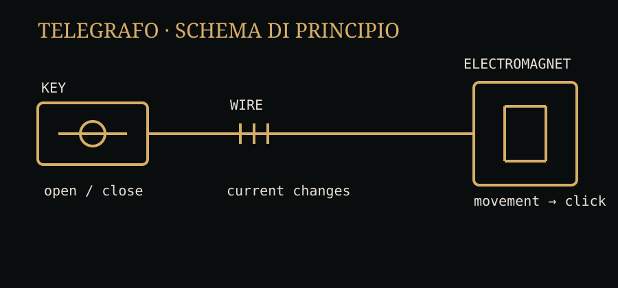

Il filo è lì. È sottile, quasi insignificante. Eppure contiene una possibilità che, fino a poco tempo prima, sarebbe sembrata assurda: se riesco a cambiare il suo stato in un punto, posso osservare quel cambiamento in un altro punto.
Prima di Morse esistono diversi esperimenti di telegrafia elettrica. Fra i protagonisti ci sono William Cooke e Charles Wheatstone in Gran Bretagna, mentre negli Stati Uniti Samuel Morse sviluppa il proprio sistema con Alfred Vail e con l'aiuto tecnico di Leonard Gale. La storia reale non è quella di un singolo inventore che si sveglia con un'idea completa: è una successione di problemi, prove, collaborazioni e correzioni. La Library of Congress documenta, per esempio, il ruolo di Joseph Henry negli esperimenti sull'elettromagnetismo e l'importanza di Gale e Vail nel rendere il sistema di Morse praticabile. citeturn0search7
Il segnale più semplice possibile
Immaginate un circuito. Una batteria, un filo, un interruttore e un ricevitore elettromagnetico.
La parte geniale è proprio la povertà del gesto. Non dobbiamo trasmettere una lettera intera. Possiamo trasmettere una successione di differenze: corrente, assenza di corrente; impulso breve, impulso lungo; pausa.
Da qui nasce un principio che ritroveremo nella comunicazione digitale: il mezzo fisico non deve «conoscere» il significato. Deve soltanto trasportare stati che un sistema di codifica permette di interpretare.

La A non viaggia
Se l'operatore vuole mandare una A, nel filo non c'è una A. Non c'è neppure una piccola lettera che corre tra Washington e Baltimora.
Nel sistema Morse la A viene rappresentata con punto e linea: .-. Il ricevitore produce un segno o un suono; l'operatore ricostruisce il carattere.
Morse e Alfred Vail sviluppano il codice tenendo conto anche dell'efficienza: le lettere frequenti ricevono combinazioni brevi. Il codice non è quindi solo un alfabeto: è una strategia per usare bene un canale limitato. citeturn0search4turn0search1
Il messaggio passa attraverso una catena di trasformazioni: linguaggio → codice → impulsi elettrici → segni/suoni → linguaggio. Ogni passaggio introduce una regola che deve essere condivisa da mittente e destinatario.
Dentro il ricevitore
La corrente che arriva alla stazione ricevente attraversa una bobina. La bobina genera un campo magnetico. Quel campo attrae una parte metallica. Il movimento produce il caratteristico «clic» del ricevitore.
All'inizio il sistema di Morse usa un pennino che imprime punti e linee su un nastro di carta. Ma gli operatori scoprono presto che il meccanismo può diventare anche acustico: ascoltano il ritmo della leva e imparano a riconoscere le lettere direttamente dal suono. La Library of Congress descrive proprio questo passaggio dal nastro stampato al «sounder». citeturn0search1
Scrivi una frase breve e ascolta la sequenza. Il ritmo non è un effetto decorativo: è la rappresentazione fisica del codice.
24 maggio 1844
La dimostrazione decisiva arriva sulla linea tra Washington e Baltimora. Morse invia il messaggio «What hath God wrought?»; la Library of Congress conserva il nastro storico e ricorda che Annie Ellsworth, figlia del commissario dei brevetti Henry Leavitt Ellsworth, suggerì il testo tratto dal Libro dei Numeri. citeturn0search2turn0search3
La scena è potente proprio perché non assomiglia ancora a Internet. Non c'è uno schermo. Non c'è un browser. Non c'è un pacchetto. C'è una stanza, una chiave, un filo e qualcuno dall'altra parte che riceve una sequenza di segnali.
La distanza diventa infrastruttura
La vera rivoluzione non è il singolo apparecchio. È ciò che accade quando cominciamo a stendere fili, costruire stazioni, formare operatori e stabilire regole.
La comunicazione diventa un servizio infrastrutturale. E appena esiste un'infrastruttura, compaiono nuove domande: chi la gestisce? Quanto costa? Come si stabilisce un percorso? Come si amplifica un segnale? Come si evita che un guasto interrompa tutto?
Le domande sembrano ottocentesche. In realtà sono già le domande delle reti.
Fonti storiche
Library of Congress · Invention of the Telegraph · First telegraph message, 24 May 1844.